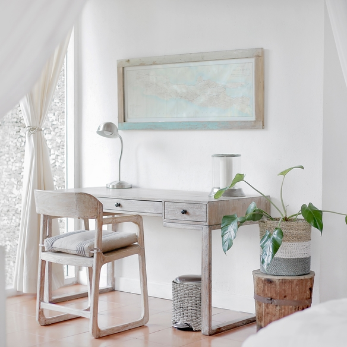
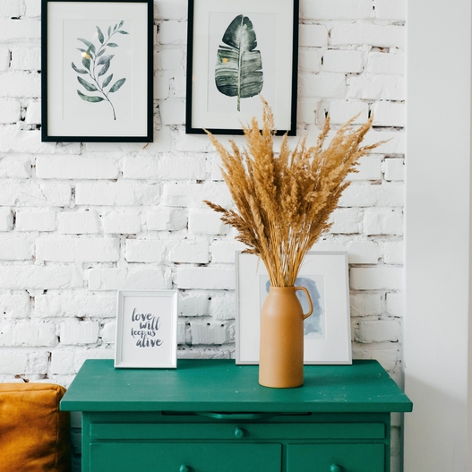
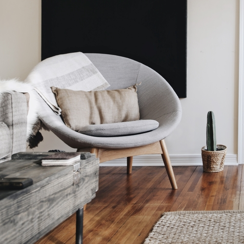
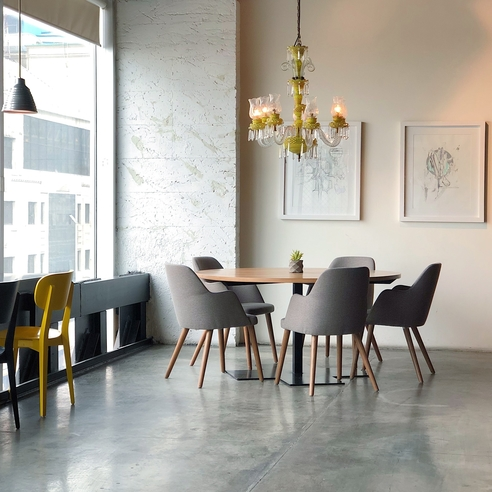
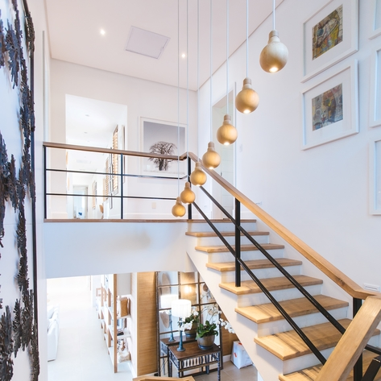
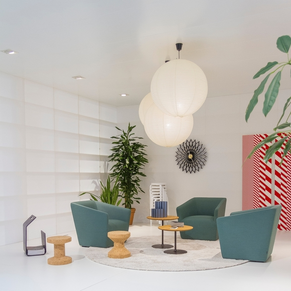
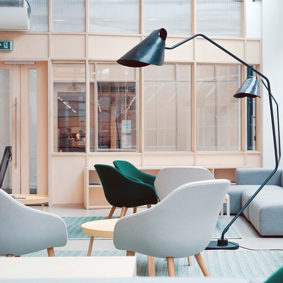
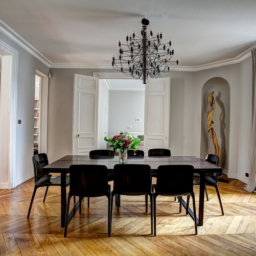
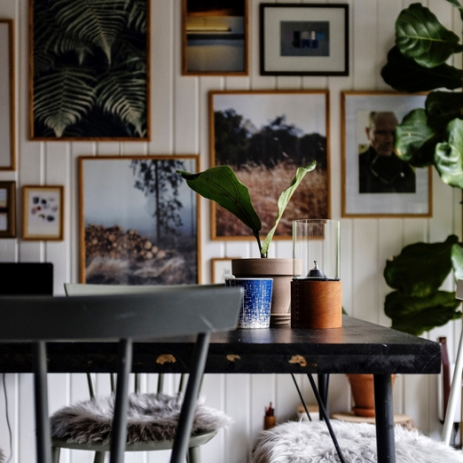
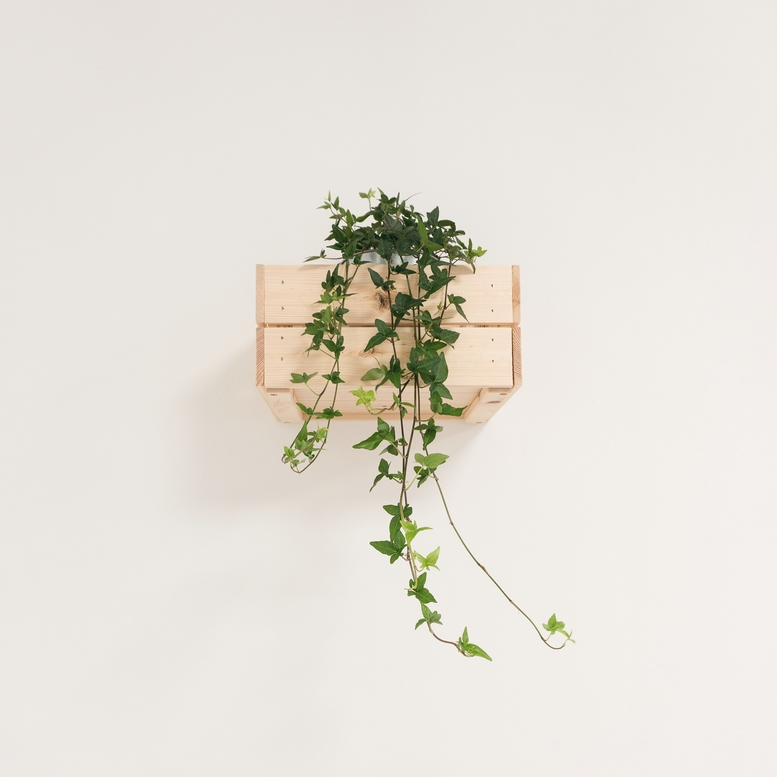

- Iva Papac
- email: ipapac@foi.hr
- JMBAG: 0016129565










CVJETNI MOTIVI U KUPAONICI
Vladavina uzoraka betona, mramora i drveta, cvjetni motivi ipak nije istisnula cvjetne motive,
koji su ionako najpopularniji motivi u povijesti kupaonica. Jedino što se mijenjalo su boje i stil.
Cvjetni motivi lako se kombiniraju s jednobojnim pločicama, ali i onima koje imaju svoj uzorak.
Cvjetovi su idealan način na naglasimo neki dio kupaonice, ili da prostor ne djeluje monotono.
Izvor: InDizajn
KUHINJA MJESECA
Starinske kuhinje imale su uglavnom koncept otvorenih polica na kojima je sve bilo “transparentno”.
No, sa smanjenjem broja kvadrata ove prostorije u domu zaživjela je ideja zatvorenih ormarića
u koje je stalo puno više stvari.
A sada, najnoviji trendovi donose kuhinje koje ne samo da imaju u svom sastavu ormare od poda do stropa,
bez “prekida” u srednjem dijelu koji bi dijelio elemente na donje i gornje, nego se one u potpunosti zatvaraju.
Naravno, nude i mogućnost da se vrlo lako i jednostavno otvaraju i zatvaraju. Možda će nam se to na prvu činiti
posve nepotrebnim pa čak i nelogičnim, no skrivene kuhinje, koje imaju koncept vrata koja ih posve zatvaraju i
pretvaraju u ugradbene ormare itekako je dobar i koristan.
Izvor: InDizajn
PROSTOR ISPOD KREVETA
Iskoristiti krevet, odnosno prostor ispod njega svakako je poželjno,
naročito ako imamo malu spavaonicu ili općenito živimo u životnom prostoru koji ne obiluje kvadratima.
U njega pohranjujemo stvari poput popluna, deka i posteljine, stvari koje često ne koristimo
kao i sezonsku odjeću i obuću koja trenutno nije aktualna.
Dogodi se da tamo spremimo stvari kojima tamo nije mjesto te napravimo i nekoliko drugih “strateških” pogrešaka.
Izvor: InDizajn